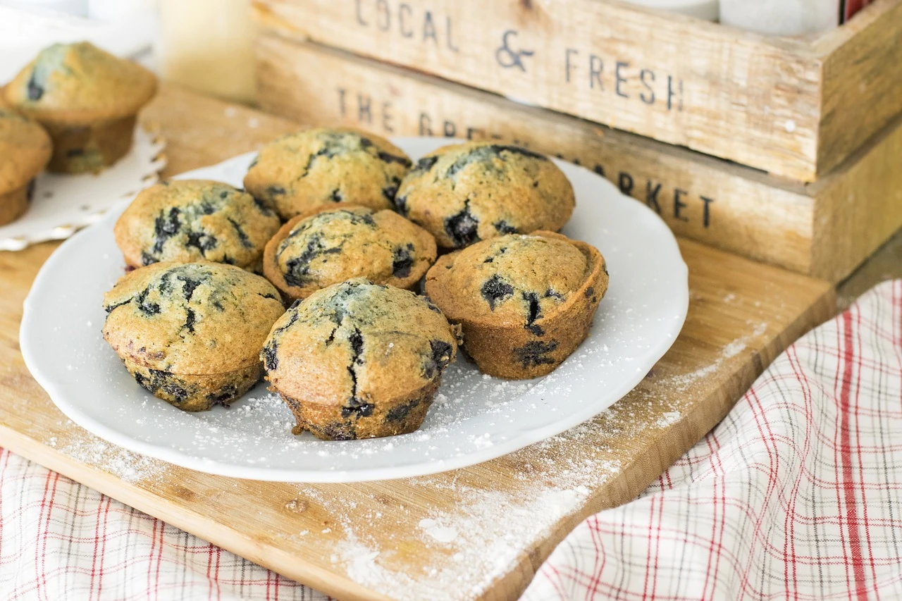

Blaubeer-Muffins
| 250 | g Mehl |
| 150 | g Zucker |
| 2 | TL Backpulver |
| 1 | Prise Salz |
| 1 | Ei (er) |
| 100 | ml Milch |
| 80 | ml Olivenöl |
| 1 | TL Vanilleextrakt |
| 200 | g frische oder gefrorene Blaubeeren |
Nährwerte für die gewählte Anzahl an Portionen
Zubereitung
1. Ofen auf 180 °C vorheizen und eine Muffinform einfetten oder mit Papierförmchen auslegen.
2. Mehl, Zucker, Backpulver und Salz in einer großen Schüssel vermengen.
3. In einer separaten Schüssel das Ei mit Milch, Öl und Vanilleextrakt verquirlen.
4. Die feuchten Zutaten zu den trockenen geben und kurz vermengen, bis gerade so ein Teig entsteht. Die
Blaubeeren vorsichtig unterheben.
5. Den Teig in die Muffinformen füllen und ca. 20-25 Minuten backen, bis die Muffins goldbraun sind und
ein
Zahnstocher sauber herauskommt.